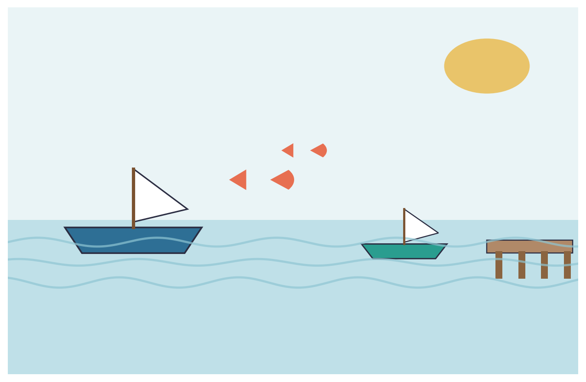
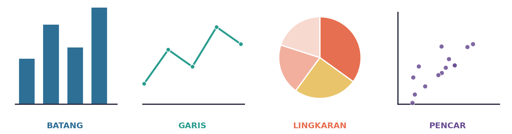
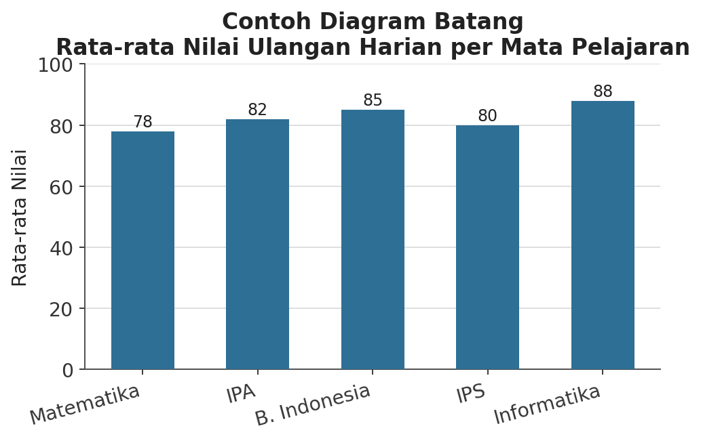
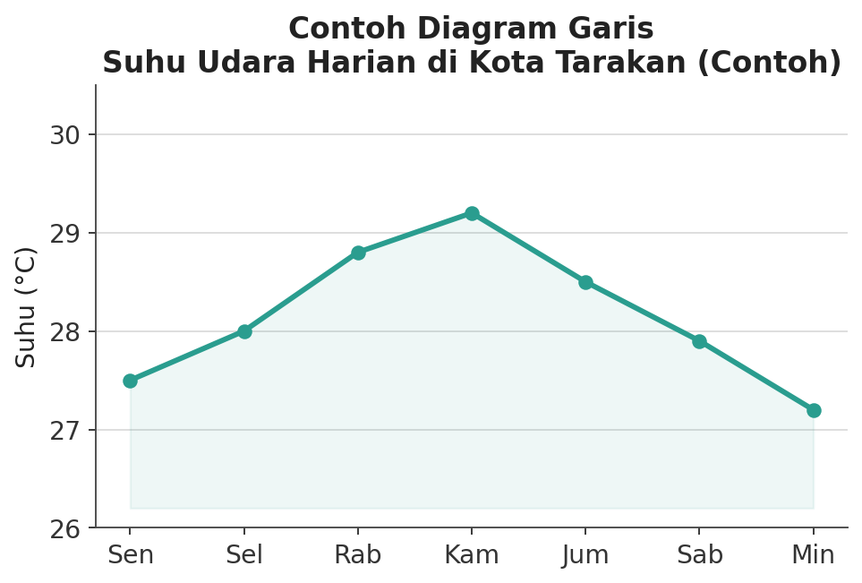
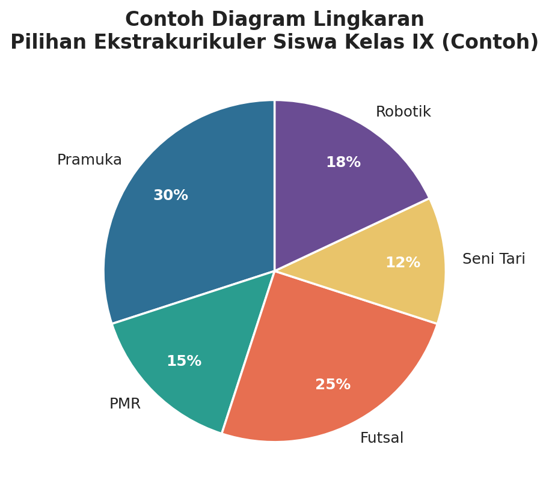
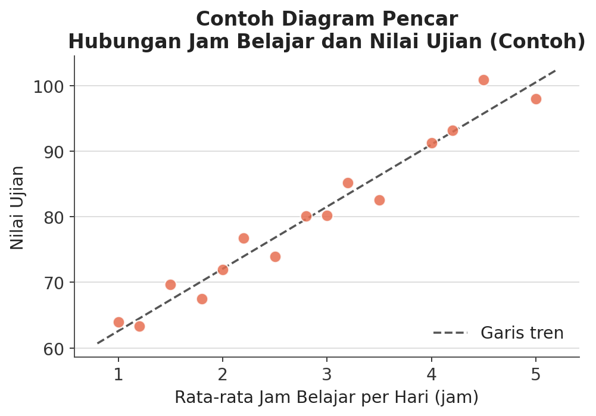
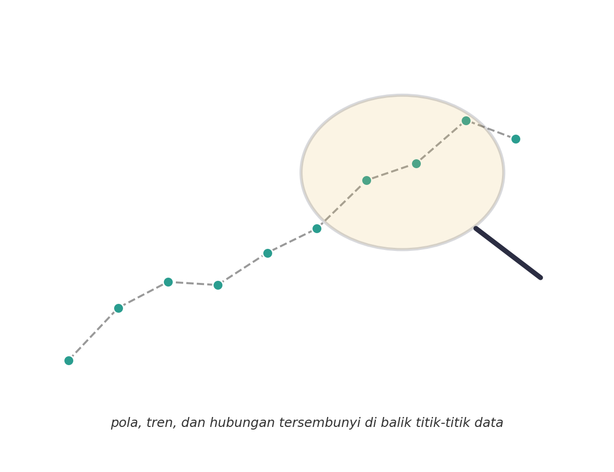
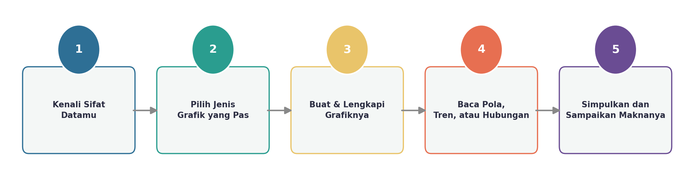
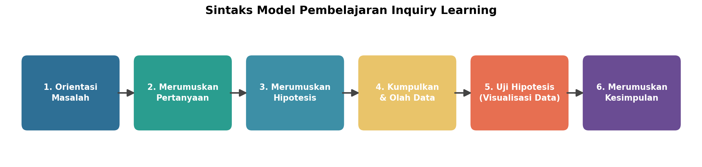
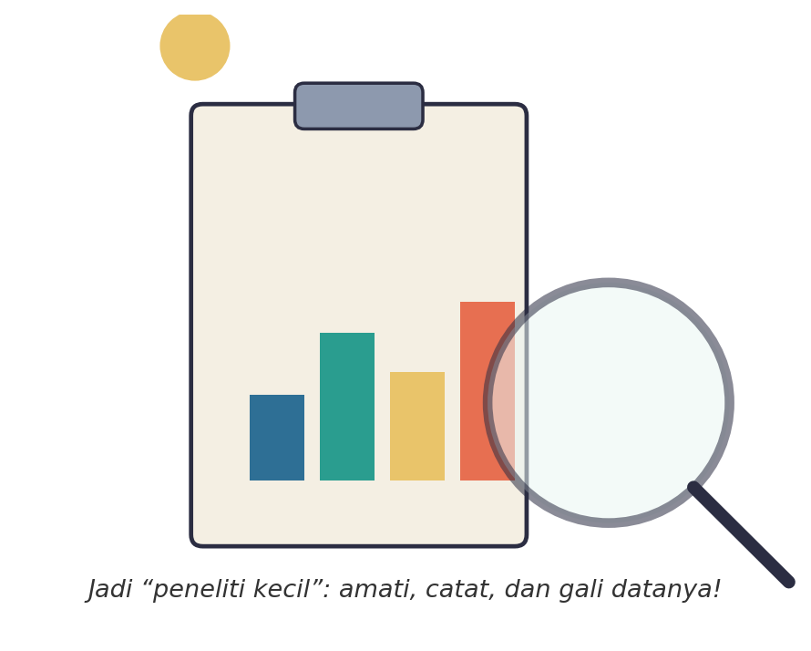

Yuk, Intip Apa yang Bakal Kamu Kuasai
Setelah baca materi ini sampai habis, kamu bakal bisa:
- membedakan empat jenis diagram dasar — batang, garis, lingkaran, dan pencar — dan tahu kapan masing-masing paling pas dipakai;
- membaca pola, tren, perbandingan, dan hubungan dari sebuah grafik;
- memilih dan membuat visualisasi data yang paling sesuai buat data tertentu.
Kata Kunci
Coba Diingat-Ingat Lagi, Yuk
Di pertemuan-pertemuan sebelumnya, kamu udah belajar cara membaca dan mengolah data terstruktur — mulai dari mengenali bentuk data dalam tabel, sampai menyusun dan membersihkan data biar siap dianalisis lebih lanjut.
Nah, sekarang saatnya naik level. Data yang udah rapi itu percuma kalau cuma ditumpuk jadi angka-angka di layar — orang lain bakal susah nangkep maknanya dengan cepat. Makanya, hari ini kita bakal belajar cara ‘menerjemahkan’ data jadi gambar yang gampang dipahami sekali lihat: visualisasi data alias grafik!
Kenalan Dulu, Yuk, Sama Masalah Kita Hari Ini
Coba bayangin kamu kerja di Dinas Perikanan Kota Tarakan. Setiap bulan, ratusan nelayan menyetorkan laporan hasil tangkapan mereka — ribuan angka numpuk begitu aja di lembar rekap. Gimana caranya kamu bisa tahu dengan cepat: apakah hasil tangkapan tahun ini cenderung naik atau turun? Kecamatan mana yang hasil tangkapannya paling besar? Jenis ikan apa yang paling banyak didapat nelayan?

Kalau cuma mengandalkan tabel angka mentah, bisa-bisa butuh waktu berjam-jam cuma buat ‘membaca’ data doang — belum lagi risiko salah tangkap pola. Nah, di sinilah visualisasi data berperan penting.
Hari ini, kamu dan kelompokmu bakal jadi “peneliti kecil” yang menyelidiki data Hasil Tangkapan Ikan Kota Tarakan pakai berbagai jenis grafik — biar makna di balik angka-angka itu kelihatan jelas.
Empat Senjata Utama Visualisasi Data
Ada empat jenis diagram dasar yang wajib kamu kuasai. Masing-masing punya ‘kekuatan’ sendiri-sendiri — nggak semua data cocok divisualisasikan pakai jenis grafik yang sama, jadi penting buat tahu kapan pakai yang mana.

Diagram Batang — Buat Membandingkan
Cocok dipakai kalau kamu mau membandingkan data angka antarkategori. Contohnya: membandingkan nilai rata-rata ulangan dari lima mata pelajaran yang berbeda — tinggi-rendahnya batang langsung kelihatan sekali lihat.

Diagram Garis — Buat Menunjukkan Tren
Cocok dipakai kalau kamu mau menunjukkan tren atau perubahan data dari waktu ke waktu — harian, bulanan, atau tahunan. Contohnya: perubahan suhu udara harian selama seminggu, naik-turunnya bisa langsung ketauan dari garis yang terbentuk.

Diagram Lingkaran — Buat Menunjukkan Proporsi
Cocok dipakai kalau kamu mau menunjukkan proporsi atau persentase bagian dari keseluruhan. Contohnya: persentase siswa yang ikut berbagai ekstrakurikuler — langsung kelihatan mana yang paling diminati.

Diagram Pencar — Buat Menunjukkan Hubungan
Cocok dipakai kalau kamu mau menunjukkan hubungan (korelasi) antara dua variabel numerik. Contohnya: hubungan antara jam belajar dan nilai ujian siswa — dari sebaran titik-titiknya, kamu bisa menduga apakah dua hal itu saling memengaruhi.

Cara Membaca Pola, Tren, dan Hubungan
Bikin grafik doang belum cukup — kemampuan paling penting justru ada di langkah setelahnya: membaca apa yang sebenarnya ‘dikatakan’ oleh grafik itu.

- Tren — kalau garis grafik cenderung naik atau turun terus dalam jangka waktu tertentu, itu tandanya ada tren. Contoh: hasil tangkapan yang terus meningkat selama beberapa bulan berturut-turut.
- Pola berulang — kalau ada bentuk yang muncul lagi dan lagi secara teratur (misalnya naik-turun setiap tahun di musim yang sama), itu disebut pola musiman.
- Perbandingan — dari diagram batang, kamu bisa langsung lihat kategori mana yang menonjol jauh dari yang lain.
- Hubungan (korelasi) — dari diagram pencar, kamu bisa menduga apakah dua hal saling memengaruhi satu sama lain.
Resep Umum: Bikin Grafik yang Tepat
Supaya nggak salah pilih grafik, ikutin lima langkah gampang ini setiap kali kamu mau menyajikan data.

- Kenali Sifat Datamu — apakah datamu tentang perbandingan kategori, perubahan waktu, proporsi, atau hubungan dua variabel?
- Pilih Jenis Grafik yang Pas — cocokkan sifat data dengan jenis grafik yang paling sesuai (lihat tabel di bawah).
- Buat & Lengkapi Grafiknya — jangan lupa tambahkan judul, label sumbu, dan data label biar grafiknya mudah dibaca orang lain.
- Baca Pola, Tren, atau Hubungan — amati apa yang ditunjukkan grafik itu.
- Simpulkan dan Sampaikan Maknanya — ceritakan temuanmu dengan kalimat yang jelas, jangan cuma tunjukkan gambarnya saja.
Tabel Cepat: Grafik Apa buat Data Apa?
| Jenis Grafik | Kapan Dipakai |
|---|---|
| Diagram Batang | Membandingkan data angka antarkategori (misalnya antarkecamatan atau antarmata pelajaran) |
| Diagram Garis | Menunjukkan tren/perubahan data dari waktu ke waktu (harian, bulanan, tahunan) |
| Diagram Lingkaran | Menunjukkan proporsi/persentase bagian dari keseluruhan |
| Diagram Pencar | Menunjukkan hubungan antara dua variabel numerik |
Gimana Sih Kita Bakal Belajar Hari Ini?
Pertemuan hari ini pakai model pembelajaran Inquiry Learning — artinya kamu dan kelompokmu bakal jadi peneliti sungguhan yang menyelidiki data sendiri, bukan cuma mendengarkan penjelasan guru. Ini alurnya:

- Orientasi Masalah — mengamati data mentah dan merasakan sendiri kesulitan membacanya.
- Merumuskan Pertanyaan — menentukan apa yang mau diselidiki dari data itu.
- Merumuskan Hipotesis — menduga jenis grafik dan pola yang mungkin muncul.
- Mengumpulkan & Mengolah Data — memilah data yang relevan dengan pertanyaan kelompok.
- Menguji Hipotesis — membuat visualisasi data sungguhan untuk membuktikan dugaan tadi.
- Merumuskan Kesimpulan — menuliskan apa makna dari grafik yang sudah dibuat.
Sekarang, Giliran Kamu!

Bareng kelompokmu, kamu bakal menyelidiki data “Hasil Tangkapan Ikan Kota Tarakan”. Setiap kelompok akan mendapat satu sub-tema penyelidikan yang berbeda, misalnya:
- bagaimana tren hasil tangkapan ikan dari bulan ke bulan;
- bagaimana perbandingan hasil tangkapan antarkecamatan;
- bagaimana proporsi jenis ikan yang paling banyak ditangkap;
- apakah ada hubungan antara curah hujan dan hasil tangkapan ikan.
Tugas kelompokmu: rumuskan pertanyaan dan dugaan (hipotesis), olah datanya, buat grafik yang paling tepat, lalu simpulkan apa makna di baliknya. Semua langkah ini bakal kamu kerjain di Lembar Kerja Peserta Didik (LKPD) yang dibagiin gurumu. Selamat menyelidiki, peneliti data!
Bocoran Tips Biar Makin Jago
Bikin Grafik Manual di Kertas Berpetak
Kalau kelompokmu belum sempat pakai komputer, grafik tetap bisa dibuat manual: gambar sumbu horizontal dan vertikal, tentukan skala yang rapi (misalnya per 50 atau per 100), lalu plot datanya satu per satu. Jangan lupa kasih judul dan label sumbu, ya!
Bikin Grafik Digital Lewat Spreadsheet
Kalau ada akses komputer atau HP, kamu bisa pakai aplikasi spreadsheet: masukkan data ke tabel, blok datanya, lalu pilih menu ‘Sisipkan Grafik’ dan sesuaikan jenisnya dengan tabel ‘Grafik Apa buat Data Apa?’ di atas.
Grafik yang baik selalu punya judul yang jelas, label sumbu, dan satuan data. Tanpa itu, grafik secakep apa pun bisa disalahartikan pembacanya.
Rangkuman Singkat
- Data mentah yang ditumpuk jadi tabel angka seringkali sulit dipahami dengan cepat.
- Visualisasi yang tepat membuat pola, tren, perbandingan, atau hubungan lebih mudah ditemukan dan dikomunikasikan.
- Diagram batang untuk perbandingan, diagram garis untuk tren, diagram lingkaran untuk proporsi, dan diagram pencar untuk hubungan.
- Grafik yang baik selalu dilengkapi judul, label sumbu, dan data label.
- Langkah penting setelah membuat grafik adalah membaca dan menyimpulkan maknanya.
Cek Dulu, Udah Paham Belum?
Sebelum masuk ke kegiatan kelompok, coba jawab dulu yuk pertanyaan berikut sendirian.
Kamus Kecil Istilah Penting
- Visualisasi Data
- cara menyajikan data dalam bentuk gambar (grafik/diagram) agar lebih mudah dipahami.
- Diagram Batang
- grafik berbentuk batang untuk membandingkan data angka antarkategori.
- Diagram Garis
- grafik berbentuk garis untuk menunjukkan tren atau perubahan data dari waktu ke waktu.
- Diagram Lingkaran
- grafik berbentuk lingkaran untuk menunjukkan proporsi atau persentase bagian dari keseluruhan.
- Diagram Pencar
- grafik berupa sebaran titik untuk menunjukkan hubungan antara dua variabel numerik.
- Tren
- kecenderungan data untuk naik atau turun secara konsisten dalam jangka waktu tertentu.
- Korelasi
- hubungan atau keterkaitan antara dua variabel yang saling memengaruhi.
- Proporsi
- besar bagian tertentu dibandingkan dengan keseluruhan, biasanya dalam bentuk persentase.